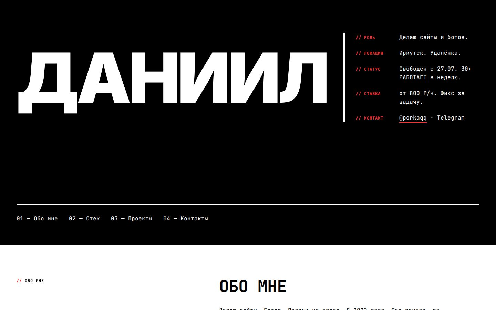
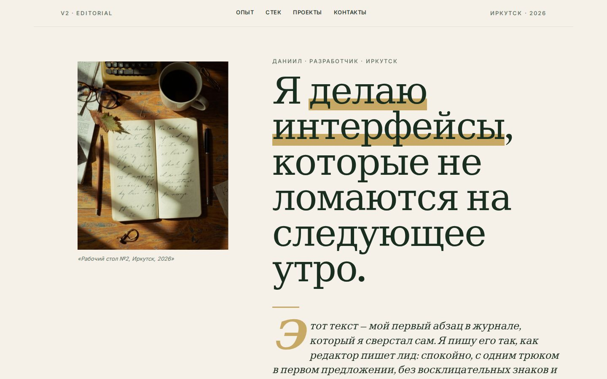
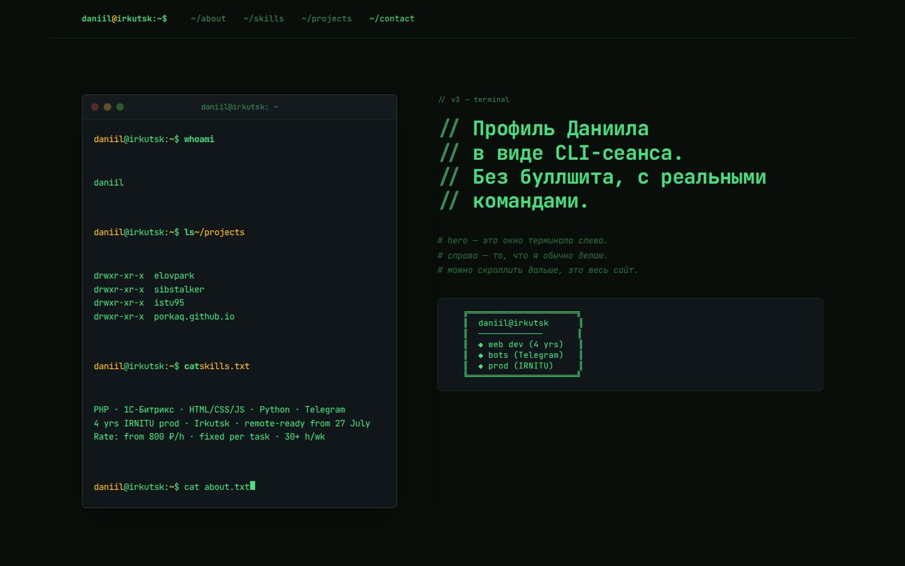
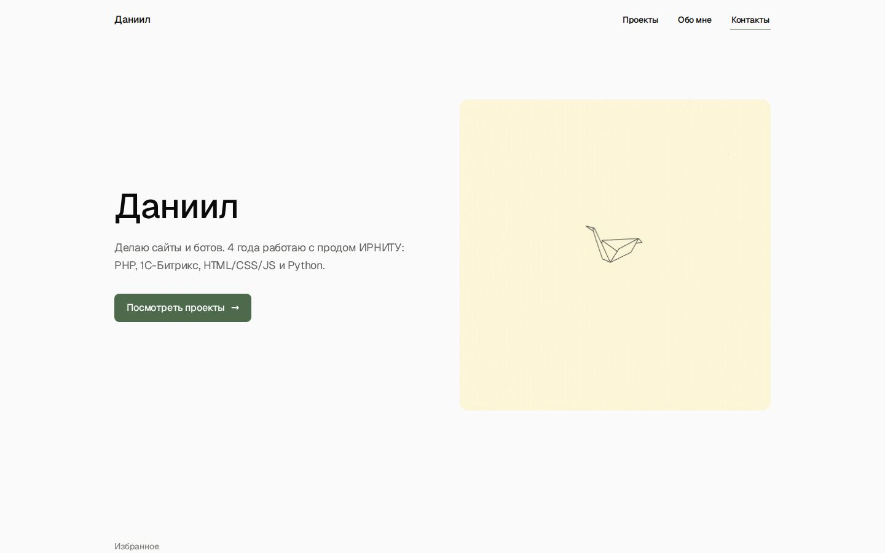
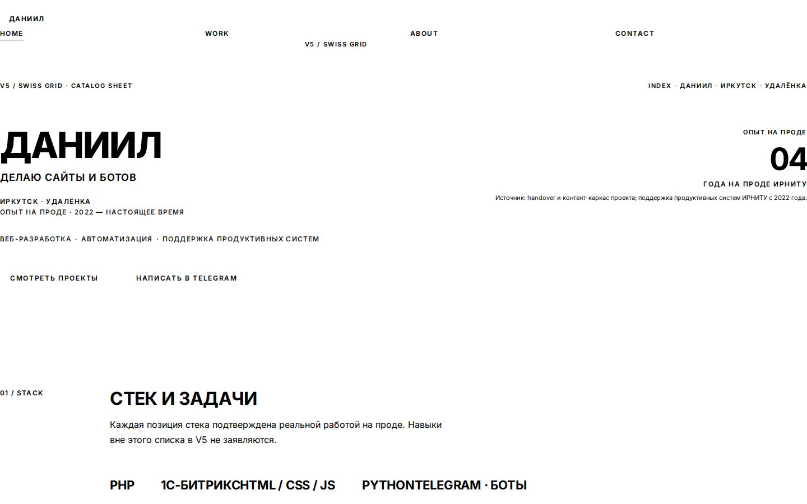
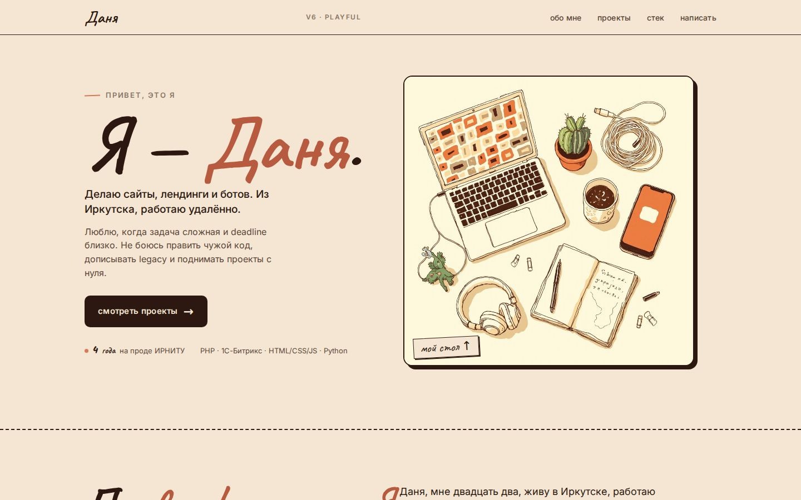

Бетон и манифест
Чёрный фон, белая типографика, красный акцент. «ДАНИИЛ» 200px, рубленый тон, без анимаций. Эстетика Bloomberg Businessweek и брутализма 2010-х.
→ Открыть v1-brutalistШесть standalone-страниц одного портфолио. Контент, контакты и проекты одинаковые. Тон, типографика, цвет и анимации — разные. Это каталог для выбора финального варианта, не финальный сайт.

Чёрный фон, белая типографика, красный акцент. «ДАНИИЛ» 200px, рубленый тон, без анимаций. Эстетика Bloomberg Businessweek и брутализма 2010-х.
→ Открыть v1-brutalist
Кремовый фон, тёмно-зелёный текст, mustard marker-pen. Drop-cap 96px, vintage flat-lay фото, fade-up через IntersectionObserver. Тон — длинный, развёрнутый, как в The New Yorker.
→ Открыть v2-editorial
JetBrains Mono ВЕЗДЕ, prompt `$ daniil@irkutsk:~$`, вывод реальных команд (whoami, ls, cat, tree). Typing через rAF, cursor blink, fade-up через IO. Не Matrix rain — серьёзный dev-tool.
→ Открыть v3-terminal
Офф-вайт фон, чёрный текст, moss accent. Geist Sans, split 50/50, минимум воздуха и слов. Subtle fade-up через IO, hover-lift translateY. Фактология, без эмоций.
→ Открыть v4-minimalist
12-колонная сетка, Inter caps для всего, графит + кремовый + терракотовый. Единственная проверенная цифра — «04» (4 года). Формальный third-person тон, как в каталоге.
→ Открыть v5-swiss
Тёплая палитра, Caveat/Kalam handwritten имя «Даня», flat-lay иллюстрация рабочего стола. Marquee для стека, hover-tilt rotateY через rAF, fade-up через IO. Личный zine, не крикливый childish.
→ Открыть v6-playful